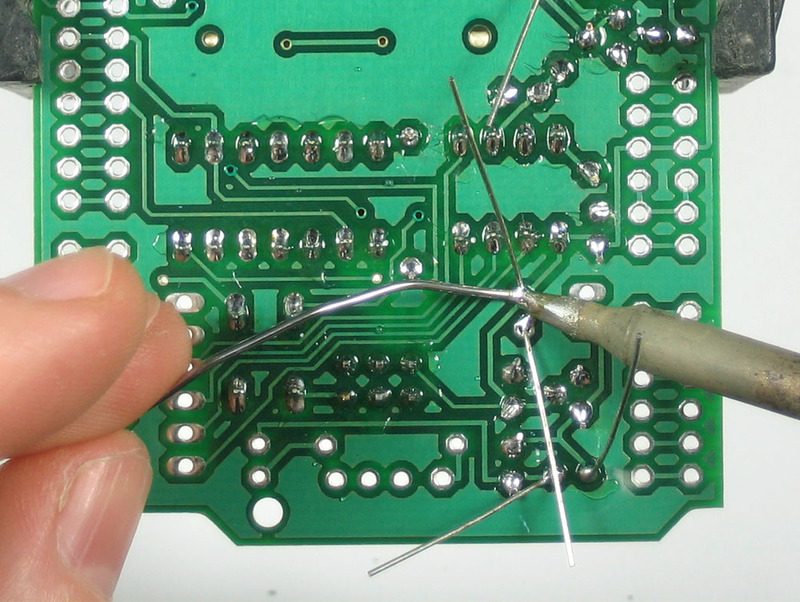
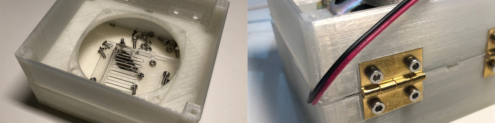
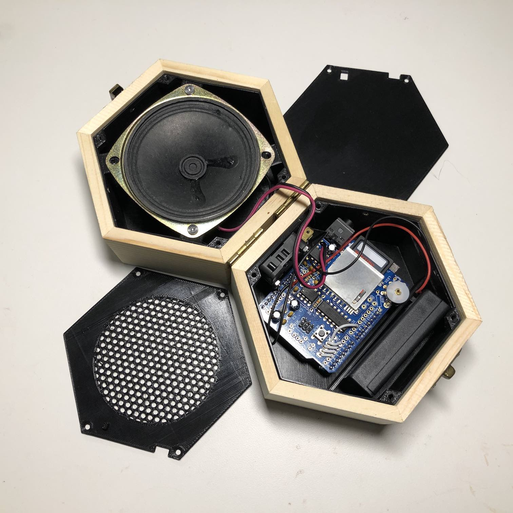

Toddler’s First Music Box
Toddler toys are stacked with blinking lights, loud attention seeking noises, and earworm songs. They are often made of plastic and sadly, feel cheap. My daughter deserves better!
So I set out to design her a perfect music box: an old concept infused with modern technology, without subjecting her to the hazards of screens. I wanted the box to play her favorite songs, be durable and portable, have long battery life, all while being a beautiful object. This is the result:
Building a portable music player
My first instinct was to try to build this using a Raspberry Pi, but turns out running Linux has a few major downsides:
- Eeking out reasonable battery life is really difficult.
- Boot times are very slow, in the 10s of seconds.
An alternative to running embedded Linux is programming a prototyping board directly. So I dusted off an old Arduino Uno and discovered the Adafruit Wave Shield, which does exactly what I needed. It reads audio from an SD card, and plays it back through a speaker. When the Wave Shield kit arrived, I was somewhat shocked to see a bare PCB and all of the components in a little baggie.
Luckily, there’s an incredible Makerspace at work, so I dropped by after my actual work was done, picked up a soldering iron, and got to work. I’ve soldered before, but not much since my favorite class of all time: Making Things Interact at CMU, taught by Mark Gross. Initially daunting, I knocked it out in no time thanks to some really detailed instructions. The results were amazing. Fuse a bunch of metal and silicon together, attach a battery and 1.5 seconds later (that’s the boot time), a song is playing through the speaker! Any sufficiently advanced technology is indistinguishable from magic.

Randomly playing songs
The sample software for the Wave Shield plays all of the .wav files on the SD card in lexical order. I wanted something a bit more delightful than playing the same playlist in the same order. So I wrote a program that plays a random song instead. Easy peasy, here we go.
I enumerated all of the wavs on the card and stored all of their filenames in a char** dynamically allocated on the heap. Oops! There’s barely enough space there to allocate a dozen file names, and I’d selected 60 songs. It appears that years of front-end UI engineering have dulled my low level embedded software development instincts. After fighting the C++ compiler about static 2D array allocation, I took a simpler and more memory efficient approach, first counting all of the songs, then picking a random song number to play.
Even generating random numbers is non-trivial, since there’s no reliable absolute clock to use as a seed - the device cold-starts every time. Instead, I’m using a technique which reads in analog inputs for a pseudo random input. This may or may not be a good idea, but seems to provide some variation. Anyway, the Arduino sketch is in the GitHub repo.
Prototyping in plastic
One of the great perks of my work’s Makerspace is access to all sorts of awesome prototype manufacturing equipment, including a Carvey. So I went to Rockler and bought a 5”x5” maple block, thinking I’d hollow it out into a box with the CNC machine. Not so fast! It’d take a mere 15 hours of drilling.
Rather than wait, I opted for a faster route: prototyping with 3D printing. So I began designing music boxes on paper, then in OnShape, then printing them using the Prusa printers. Seeing a design evolve from figment of imagination to tangible physical object is incredibly satisfying. However, once that satisfaction wore off, I can honestly say that the results were functional, but not at all aesthetically pleasing:

That old time wooden aesthetic
So I went for a different strategy: buy a nice off-the-shelf box to house everything and just design its insides. This way, the 3D print is mostly hidden, and can be capped off with a laser cut or CNC milled wooden lid. I can learn about CNC joinery later.
I found a nice hexagonal box on Amazon and bought two, discarding both lids. The bottom half of the clam would house the Arduino, Shield and battery, while the top would house the speaker. They’d be connected with a speaker wire and joined by wood hinges.
Designing the innards was a delight. OnShape’s UI is excellent and responsive. The constraint system makes a lot of sense, sketching on arbitrary surfaces and then extruding them is amazingly powerful. The Assembly View and Edit-in-Context feature made aligning elements between upper and lower clamshells a cinch. This included the speaker wire port and holes for the microswitch. I experimented with a variety of designs for fastening lid to container. Initially, I opted for ambitious embedded nut designs, but ultimately went with a self-tapping (into plastic) approach using flat head screws. For fastening electronics to the plastic, I printed offsets and used nuts.
After a few iterations of fastener tweaking, design adjustments, and measurement corrections, I had a top insert for housing the speaker, and a speaker grille to protect the speaker’s membrane, a bottom insert for housing the electronic core, and a cover to hide them. The STL files are all in the GitHub repo. Here’s the result:

If you’re curious, the OnShape project is public, you just need to make an OnShape account.
Toddler user testing
Once everything was in place, it was time for toddler testing! Luckily I have a very cute and curious user on retainer for the next 18 years. I asked her to open the box, and when she did, she began wiggling along to Cat Stevens’ “la-la-la”s. I’ve since corrected the poor initial music choice – the music box now plays a healthy milieu of classics from Soviet cartoons.
A few other things became immediately clear as a result of user testing:
- My daughter was completely fascinated by the small speaker wire running between the top and bottom lid. She kept pulling at it, and eventually the wire came out enough to prevent the lid from closing fully.
- Predictably, she loves abusing the box in creative ways. At one point she was dancing on top of the box. Then she used it as a step stool to climb onto the couch. Later, she smashed the box so hard the microswitch toggled and restarted the music.
In the current version, I’ve concealed the speaker wire in nylon casing and affixed it on both ends using zipties. This solves the first issue where the wire would prevent the box from closing. I’ve also padded the battery pack so that the contents of the box rattles less, hopefully making it less satisfying to shake and smash.
I’m not sure how much battery life I’ll get from this construction, but it’s been running off the same triple AAA pack for about a week of sporadic play with maybe a couple of hours of being actually on. The fact that the device is fully off when the lid is closed (and not secretly draining batteries) makes me happy.
Finally, massive thanks to Matthew Wilson and Jon Ward for their sage advice and friendly encouragement with this project. How might we imbue other beautiful everyday objects with magical abilities?
Until next time.